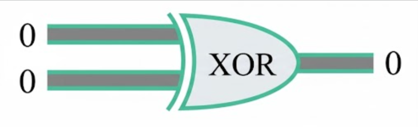

Logic Gates
Course
Project
Concepts
Database
Documentation
Dev Team
Animation
Exclusive OR (XOR) Gate Simulator

0 XOR 0[cite: 10]
0 XOR 1[cite: 11]
1 XOR 0[cite: 12]
1 XOR 1[cite: 13]
Output:
0[cite: 10]